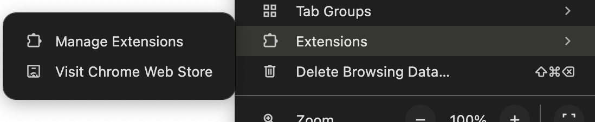
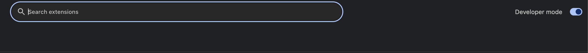
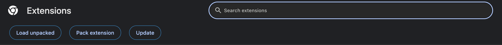
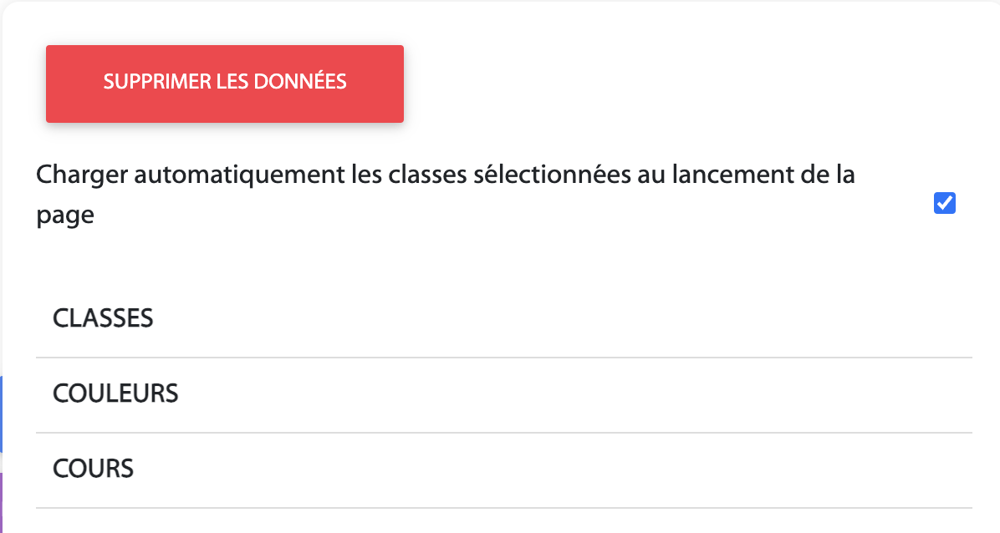
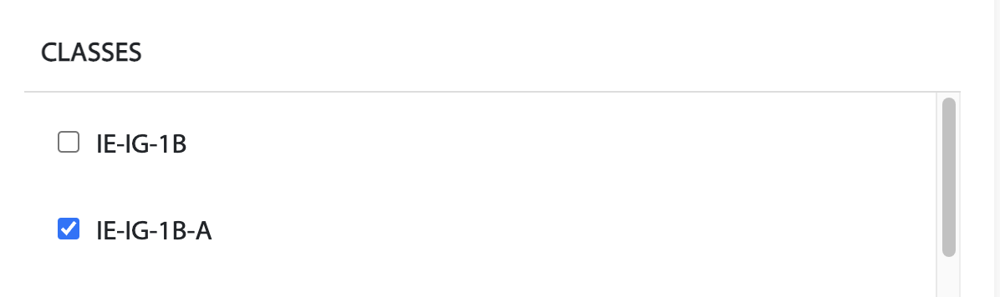
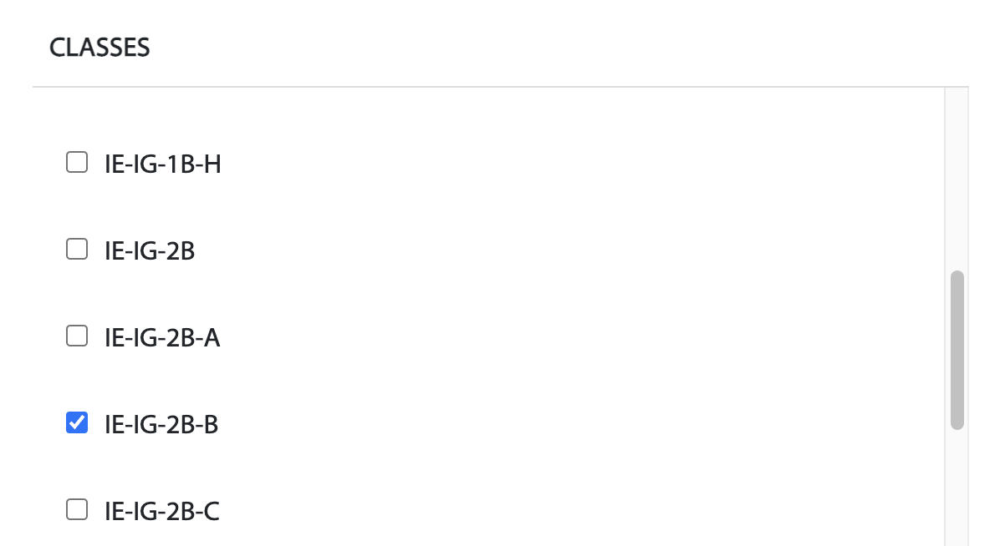
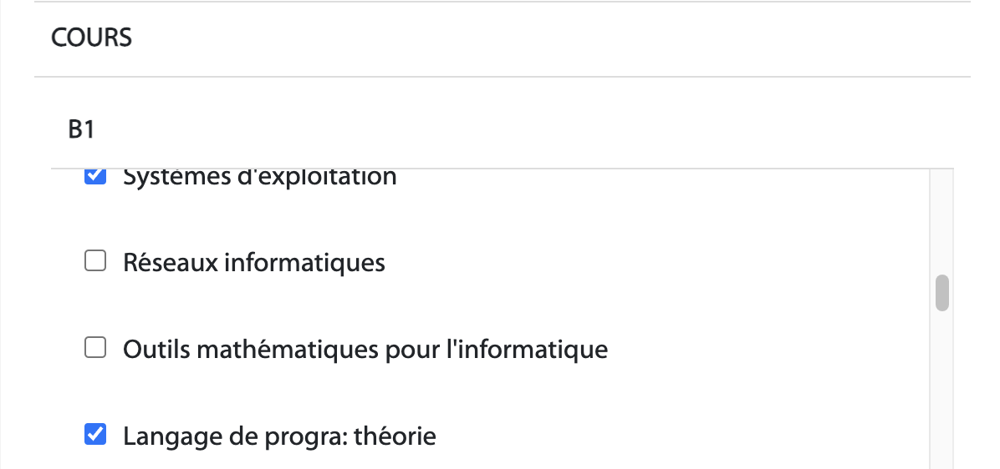
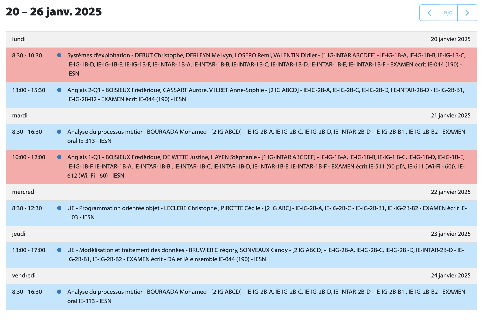

1. Installation
1.1 Télécharger l'extension
1.1 Décompression l'archive
1.3 Déplacer le dossier vers un dossier de votre choix (attention, le dossier ne doit pas être supprimé)
1.4. Installation de l'extension dans Google Chrome
1.4.1. Ouvrir le navigateur
1.4.2. Aller dans les extensions de Google Chrome (gérer les extensions)
1.4.3. Activer le mode développeur (tout en haut à droite)
1.4.4. Cliquer sur "Charger l'extension non empaquetée"
1.4.5. Sélectionner le dossier de l'extension
2. Utilisation
Une fois l'installation complétée, vous devriez voir apparaître de nouveaux boutons au-dessus de l'horaire.
LOCAUX Permet de selectionner l'horaire d'un ou plusieurs local/locaux.
PERSONNALISER Permet de mettre à jour l'horaire avec les paramètres personnalisés.
PARAMÈTRES Permet de personnaliser l'horaire (classes, cours et couleurs).
RÉCUPÉRER LE TOKEN Permet de récupérer votre token utilisateur afin de le mettre à jour sur le site (il n'est pas utilise à l'utilisation de l'extension).
EXPORTER LES PARAMÈTRES Permet de récupérer tous vos paramètres de l'extension afin de les importer sur le site (utile si vous utilisez l'extension depuis plusieurs mois).

2.1 Paramètres
Les paramètres de l'extension sont divisés en 3 catégories: classes, couleurs et cours.
Par défaut, l'extension ne charge pas l'horaire personnalisé au chargement du site, vous devez cocher la case qui permet cette fonctionnalité.
Les classes sont le/les groupe/groupes dans lequel vous êtes (ex: 1B-A et 2B-D)
 Les couleurs sont celles qui s'afficheront sur le cours dans l'horaire. Les différentes couleurs permettent de distinguer les cours de B1, B2 et B3. La catégorie AUTRES reprend les cours présents dans plusieurs groupes de différents niveaux.
Les cours affichés correspondent à ceux que vous suivez. Par exemple, si vous n'avez plus qu'un seul cours de première à compléter, vous pouvez désélectionner tous les autres cours que vous n'avez plus ou que vous avez déjà validés, afin d'obtenir un emploi du temps plus allégé.
Vous voila maintenant avec un horaire bien plus facile à lire
